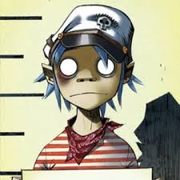
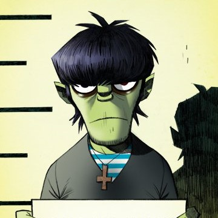
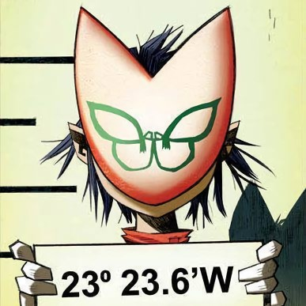
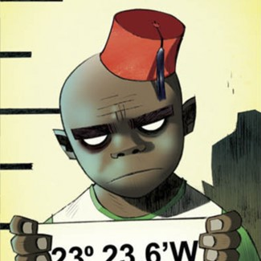

There are many alter-egos and Gorillaz is a collective of alter-egos, really.
Their style is known for its variety and genre-blending, with influences from many different types of music, but most notably from hip-hop, dub-reggae, electro, and pop.
Band Members

Stuart Pot (born Stuart Harold Tusspot, 23 May 1978), better known by his nickname 2-D, is the lead vocalist, keyboardist and frontman the band.

Murdoc Faust Niccals (né Murdoc Alphonce Niccals) is the official bass player, self-proclaimed leader and founder of Gorillaz.

ヌードル, better known as Noodle, is the official guitarist, occasional backing vocalist and youngest member band.

Russel Hobbs is the official drummer and percussionist of the band.
"Where do they come from? The wires that connect to us. Weightless and fall on your body. 'Till were invisible. I'm with you throughout it, choose. Busted and blue."